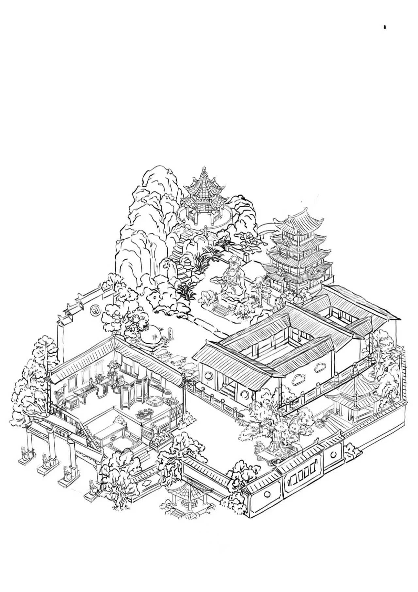

济公文化地图
欢迎来到济公文化地图，点击地图上的红色图标跳转到相应景点的详细介绍页面，了解更多关于这些著名建筑和济公文化的故事。
地图上的景点包括：
- 1. 永宁村碑
- 2. 展堂
- 3. 济公像
- 4. 钓月亭
- 5. 祖宫
- 6. 济公墙
- 7. 观霞阁
- 8. 古井
- 9. 罗汉神木
- 10. 醉仙楼
点击地图上的图标，了解著名建筑和济公文化故事

欢迎来到济公文化地图，点击地图上的红色图标跳转到相应景点的详细介绍页面，了解更多关于这些著名建筑和济公文化的故事。
地图上的景点包括：